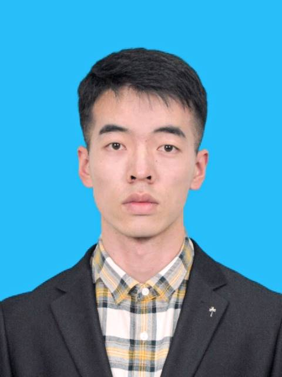

西北工业大学计算数学博士，专注于高性能数值算法与并行计算。在 CPU-GPU 异构并行、混合精度计算、时空并行算法领域有深入研究，具备从底层算子到推理系统的全栈工程能力。
西北工业大学（985 / 双一流 A 类）数学与统计学院，本硕博连读，具备扎实的数学基础与高性能计算工程能力。
研究方向：CPU-GPU 异构并行、混合精度计算、时空并行算法、非局部模型及其数值算法
核心课程：机器学习方法及应用、科学计算中的现代数值方法、计算固体力学（均 90+）
荣誉：一等学业奖学金（2023-2024）
研究方向：非均质材料多尺度近场动力学模型及数值方法、复合材料损伤断裂模拟
排名：2 / 66 · 考研成绩 413 分
荣誉：国家奖学金（教育部，2021-2022）、一等学业奖学金 ×2、校优秀毕业生
核心课程：算法与优化、机器学习中的算法及其应用、偏微分方程的有限差分法（均 90+）
排名：10 / 42
核心课程：数学分析、偏微分方程数值解、常微分方程、C 程序设计（均 90+）
荣誉：数学建模国赛省级三等奖，校三等奖学金、院优秀学生
涵盖省级重点工程、中科院战略先导项目及个人开源项目，覆盖异构并行计算、混合精度优化到大模型 Agent 全栈实践。
面向大规模工程仿真场景，构建 CPU-GPU 异构并行计算框架，实现从数值算法到系统工程的全链路优化。
针对大型复合材料结构的断裂仿真，设计高性能数值算法与统计多尺度方法。
从 GPU 底层算子优化到大模型推理系统，覆盖高性能计算与 AI Infra 全链路技术栈。
已发表及在审论文 6 篇，涵盖 International Journal of Mechanical Sciences、Journal of Computational Physics 等计算力学顶级期刊。
参与移动端 SDK 集成、接口开发与应用落地，熟练代码调试、第三方组件适配。
筹备多场学术会议，统筹会务分工，具备项目统筹、跨方沟通协调能力。
协助课程答疑、课业考核工作，梳理知识点并辅助导师开展科研辅助工作。